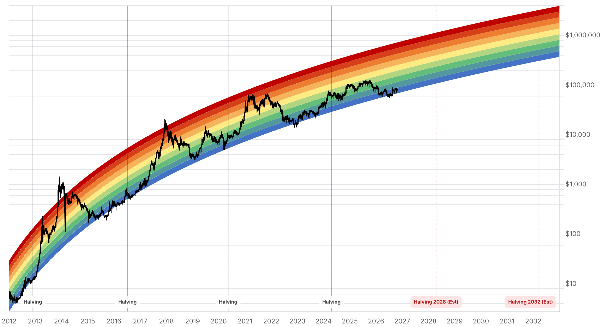

Reporte financiero
BTC cotiza en USD 82.223,63 en vivo (07:24 UTC), -2,14% frente al cierre anterior (USD 84.024,44), tras una madrugada de mucha volatilidad: el precio llegó a un máximo intradía de USD 84.808 -superando por primera vez la banda de resistencia de USD 83.000-84.000 que venía marcando el reporte de ayer- pero revirtió con fuerza hasta un mínimo de USD 82.567-82.603, y ahora opera cerca de ese piso. No se identificó un catalizador de noticias único para la reversión; la lectura más consistente entre fuentes es un rechazo técnico en la nueva zona de resistencia (USD 84.000-84.850) combinado con un contexto de riesgo más débil: futuros de Nasdaq 100 -1,1%, Tesla -3% tras-hora por su guidance de capex, Lam Research -7%, tensión renovada en Medio Oriente empujando el petróleo al alza, y posicionamiento cauteloso de cara a la reunión de la Fed del 27-28 de octubre. La dominancia de Bitcoin subió a 59,53%, señal de que las altcoins (Hyperliquid, Dogecoin) sufrieron más que BTC en la corrección. En flujos de ETF, se confirma hoy el dato del martes 20 que el reporte de ayer dejó pendiente: entrada neta modesta de solo USD 23,2M (muy por debajo del salto de USD 526,6M del lunes 19), liderada por IBIT (+USD 29,9M) y FBTC (+USD 3,6M), con BITB en -USD 10,3M y GBTC sin movimiento -lo que reduce el déficit acumulado de octubre de USD -90,6M a USD -67,4M, una mejora marginal, no una repetición del salto del lunes-. El dato del miércoles 21 todavía no está publicado por Farside/SoSoValue al momento de este reporte. No se encontró comentario de analistas específicamente nuevo sobre el salto a USD 84.808 ni sobre la reversión posterior. El resto de los ejes no tiene novedad sustancial: Strategy/Saylor sigue en ~848.250 BTC sin compra nueva, aunque se conoció hoy una declaración del CEO Phong Le de que la empresa espera retomar una acumulación más activa una vez que la acción preferente STRC vuelva a cotizar a la par; el plazo de Blumenthal a Cantor Fitzgerald por su vínculo con Tether vence mañana (23 de octubre) sin respuesta pública de ninguna de las dos partes; la apelación del fallo sobre los 61.000 BTC incautados en el Reino Unido sigue sin novedad; y la Clarity Act sigue estancada desde el fracaso de cloture del 15 de septiembre.
Durante la madrugada del 21 al 22 de octubre, BTC alcanzó un máximo intradía de USD 84.808 -superando la banda de resistencia de USD 83.000-84.000 señalada en reportes anteriores-, pero revirtió hasta un mínimo de USD 82.567-82.603 y ahora cotiza en vivo en USD 82.223,63 (07:24 UTC, -2,14% vs. cierre anterior de USD 84.024,44). No se encontró una noticia puntual que explique la reversión; las fuentes consultadas la atribuyen a un rechazo técnico en la nueva zona de resistencia (USD 84.000-84.850) combinado con un deterioro del apetito por riesgo global: futuros del Nasdaq 100 cayendo 1,1%, Tesla -3% tras-hora (guidance de capex), Lam Research -7%, tensión renovada en Medio Oriente presionando el petróleo al alza, y cautela de mercado antes de la reunión de la Fed del 27-28 de octubre. La dominancia de Bitcoin subió a 59,53%, ya que altcoins como Hyperliquid y Dogecoin cayeron más que BTC durante la corrección.
Los ETFs de Bitcoin al contado en EE.UU. registraron una entrada neta de solo USD 23,2M el martes 20 de octubre, muy por debajo de los USD 526,6M del lunes 19. El detalle por fondo: IBIT +USD 29,9M, FBTC +USD 3,6M, GBTC sin movimiento (USD 0,0M) y BITB -USD 10,3M. Esto reduce el déficit acumulado de octubre de USD -90,6M (tras el dato del lunes) a USD -67,4M -una mejora marginal, no una confirmación de que la demanda institucional se sostiene al ritmo del lunes-. El dato del miércoles 21 de octubre todavía no está publicado por las fuentes habituales (Farside, SoSoValue, TFTC) al momento de este reporte; una nota secundaria (Analytics Insight) menciona que los ETFs spot acumularon 'más de USD 1.080M en tres días' hacia el 22 de octubre, pero sin desglose diario verificable, por lo que no se usa como cifra confirmada.
No se encontraron declaraciones o análisis específicamente nuevos sobre el salto a USD 84.808 ni sobre la reversión posterior a USD 82.600 -se deja constancia de este vacío en vez de reciclar citas de reportes anteriores. Se debe revisar nuevamente en el próximo reporte.
Strategy permanece en aproximadamente 848.250 BTC, sin compra nueva confirmada desde el filing del 12 de octubre. Sí se conoció hoy una declaración del CEO Phong Le indicando que la empresa espera retomar una acumulación más activa de Bitcoin una vez que su acción preferente STRC vuelva a cotizar a la par -un condicionante financiero, no un anuncio de compra inmediata.
El plazo del senador Blumenthal para que Cantor Fitzgerald responda sobre su participación en Tether vence mañana, 23 de octubre, sin pronunciamiento público de ninguna de las dos partes hasta el momento. La apelación del fallo de la High Court británica sobre los 61.000 BTC incautados a Zhimin Qian (la Corte determinó que rige la ley china, no la inglesa, sobre la disputa de propiedad) sigue sin novedad, con Fieldfisher manteniendo su intención de apelar. La Clarity Act sigue estancada desde el fracaso de cloture del 15 de septiembre (49-50 votos), sin fecha de un nuevo intento de voto en el Senado.
| Periodo | Valor |
|---|---|
| 16 oct | 81500.8 |
| 17 oct | 81382.15 |
| 18 oct | 82017.6 |
| 19 oct | 81853.54 |
| 20 oct | 82941.0 |
| 21 oct | 84011.97 |
| 22 oct (en vivo) | 82223.63 |
| Periodo | Valor |
|---|---|
| Fear & Greed | 68 |

El rechazo en la zona de USD 84.000-84.850 confirma esa banda como resistencia técnica clave -tal como se anticipaba en reportes anteriores-, mientras que el soporte inmediato pasa a ser la zona de USD 82.500. Sin un catalizador de noticias claro detrás de la reversión, el movimiento de las próximas 24-48 horas dependerá en gran medida de si el apetito por riesgo global (afectado hoy por equities tecnológicas débiles y tensión en Medio Oriente) se estabiliza antes del apagón de comunicaciones de la Fed previo a la reunión del 27-28 de octubre.
El flujo de ETF del martes 20 (+USD 23,2M) fue muy inferior al salto del lunes, lo que templa la lectura optimista de ayer sobre una recuperación sostenida de la demanda institucional -el déficit mensual solo mejoró marginalmente, de USD -90,6M a USD -67,4M. El dato del miércoles 21, todavía no publicado, será clave para saber si la demanda de ETFs acompaña o no la volatilidad de precio de las últimas horas. El rango de QCP Capital para el Q4 (USD 80.000-90.000) sigue siendo la referencia de consenso, y el movimiento de hoy (tocar casi USD 85.000 y luego caer a USD 82.200) cabe dentro de ese rango sin alterar la tesis de fondo.
Sin cambios en los objetivos de precio de largo plazo ya reportados en ediciones anteriores (Citigroup, Bernstein, Standard Chartered, Tom Lee, NYDIG, Armstrong). En el frente regulatorio/legal, sin novedades sustanciales: el plazo del 23 de octubre para la respuesta de Cantor Fitzgerald a Blumenthal es el próximo hito concreto a vigilar en el eje Tether; la apelación del fallo británico sigue con resolución esperada en 2027; y la Clarity Act sigue sin fecha de reintento en el Senado. El comentario del CEO de Strategy sobre retomar compras una vez que STRC cotice a la par es un condicionante a monitorear para la demanda corporativa.
El precio superó brevemente la resistencia de USD 83.000-84.000 pero no logró sostenerse por encima de ella, revirtiendo con fuerza hasta cerca de USD 82.200. Sin un catalizador de noticias identificado, conviene esperar un cierre sostenido por encima de USD 84.000-84.850 -no solo un máximo intradía- antes de tratar la zona como superada.
El salto de flujos del lunes 19 (+USD 526,6M) no se repitió el martes 20 (+USD 23,2M apenas). El dato del miércoles 21, aún no publicado, ayudará a determinar si la mejora de mediados de semana fue un evento puntual o el inicio de una recuperación más sostenida de la demanda institucional.
La reversión de precio de hoy coincide con debilidad en equities tecnológicas (Nasdaq 100 futuros, Tesla, Lam Research) y tensión geopolítica en Medio Oriente, no con una noticia propia de Bitcoin. Conviene seguir la correlación de BTC con activos de riesgo tradicionales en el corto plazo, especialmente de cara al apagón de comunicaciones de la Fed antes de la reunión del 27-28 de octubre.